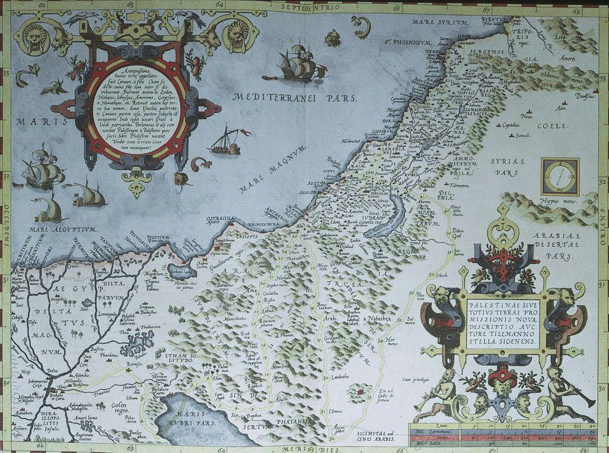

The Impact of the Crusades of the Levant.
The Levant prior to the Crusades was ruled by the Seljuk Turks. Under the rulership of the Turks, religious freedom was exercised and Jewish and Christian communities were allowed to live alongside their Muslim rulers given they pay extra taxes. At this time, there was also a strong Fatimid Egyptian power to the south of the Turks whom they rivaled. This fragmented the Muslim Empire of the time and left it weak to attacks.
Eventually the Turks began to push into Anatolia and the Byzantines called upon the pope to begin the first Crusade. During the Crusades the Levant was under control of the Crusader States. There was a religious hierarchy set in place, and Catholics were at the top of that chain. Eventually this rulership led to the rise of commanders such as Saladin who waged Jihad against the Crusader States.
Once the Crusaders were driven out of the Levant, the Mamluk Sultanate took control. The Mamluks destroyed ports along the cost of the Levant to make sure the Crusaders could not return. This worked and the Mamluk Sultante reestablished a Muslim Empire in the Middle East which would stand for the next 250 years. Though, the destruction of ports did not stop the trade which was now established between the Levant and Europe. In addition, religious based wars in the region such as the crusades are still prevalent today.